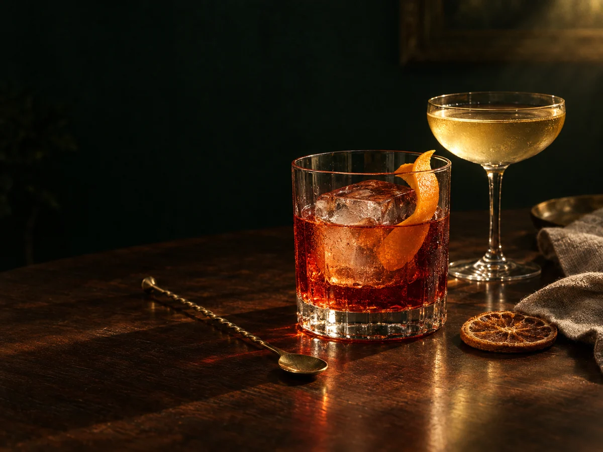

Barını kur
Evindeki içki ve malzemeleri birkaç dokunuşla seç.
Evdeki barın, bir adım ötede
Elindeki malzemeleri seç. Bar Cepte, 400+ tarif arasından tam sana göre olanları anında bulsun.
Alkollü & alkolsüz Kurulum gerektirmez Çevrimdışı çalışır

Üç küçük adım
Ne içeceğine karar vermek için saatlerce tarif aramana gerek yok.
Evindeki içki ve malzemeleri birkaç dokunuşla seç.
Tatlı, ekşi, sert veya ferah—o an ne istiyorsan.
Yapabileceklerini ve eksiklerini anında gör.
Akıllı bar asistanı
İlk şişeden son garnitüre kadar evde kokteyl hazırlamanın en zahmetsiz yolu.
Elindeki malzemelerle hemen yapabileceğin kokteylleri öne çıkarır.
En az alışverişle en çok yeni tarifi aç.
Son hazırlamalarını, favorilerini ve kendi notlarını sakla.
Tarifleri 2×, 4× veya 8× porsiyona tek dokunuşla uyarla.
Çalkalama sayacı ve ekran açık tutma modu mutfakta yanında.
Reklamsız kullanım ve speakeasy tarifleri.
Gecenin tarifini bul
Bar Cepte sadece tarif vermez. Elindekileri tanır, damak zevkini öğrenir ve o an gerçekten hazırlayabileceğin seçenekleri gösterir.
Hemen keşfet ↗Her yerde seninle
Kurulum gerektirmez
Kurulum veya portable
Doğrudan APK
AppImage ve DEB
Dolapta ne varsa seçiyorum; Bar Cepte o akşam gerçekten yapabileceğim tarifleri gösteriyor.
— Evde kokteyl sevenler için
Merak ettiklerin
Evet. Bar Cepte'nin temel özelliklerini web'de ve desteklenen cihazlarda ücretsiz kullanabilirsin.
Hayır. Hemen başlayabilir, hesabı yalnızca verilerini cihazlar arasında taşımak istediğinde kullanabilirsin.
Evet. PWA desteği sayesinde tariflere ve kişisel barına internet olmadan da erişebilirsin.
Evet. Alkolsüz tarifleri tek dokunuşla filtreleyebilir ve damak zevkine göre keşfedebilirsin.
Birlikte daha iyi
Bar Cepte ekibine ulaş; geri bildirimlerin ürünü daha iyi yapıyor.